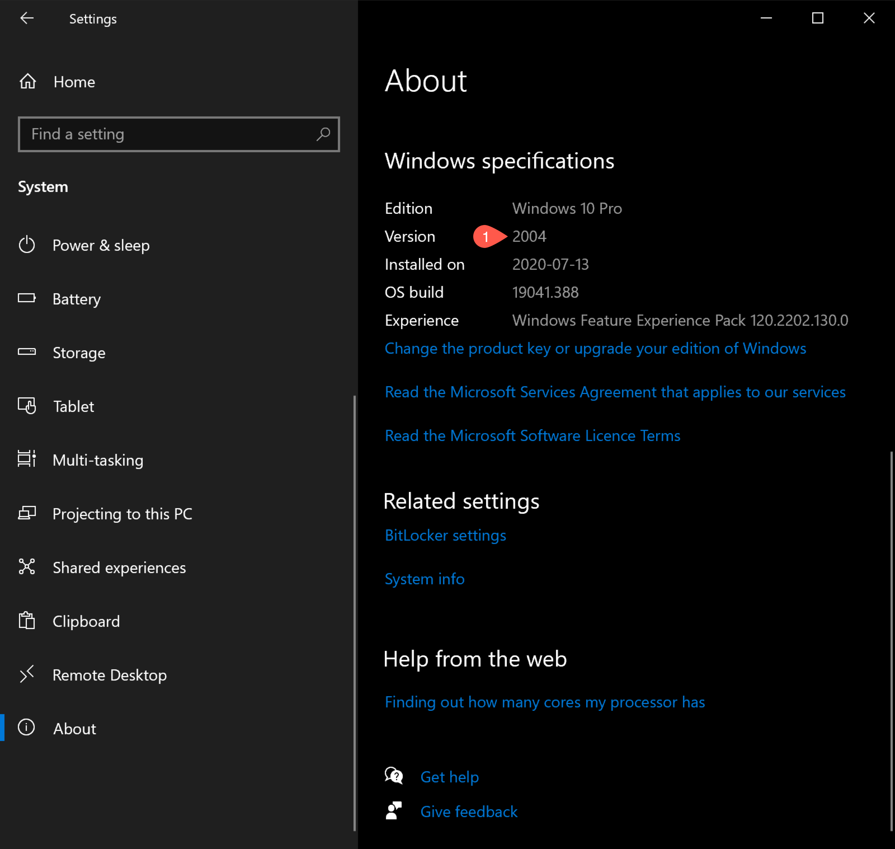
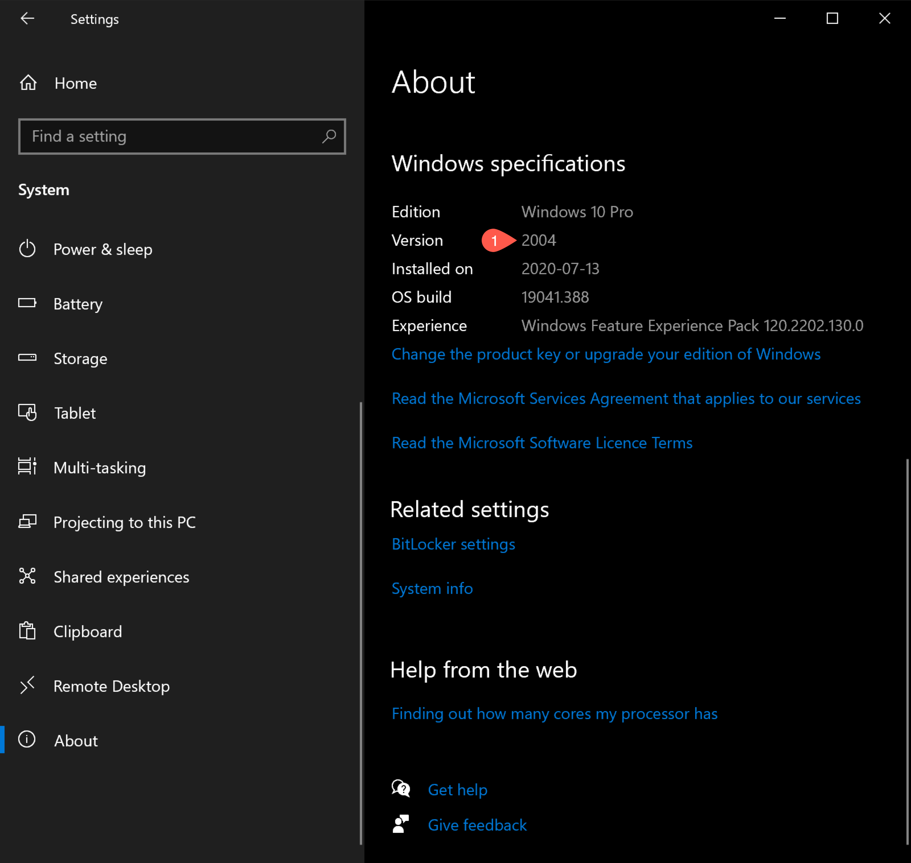
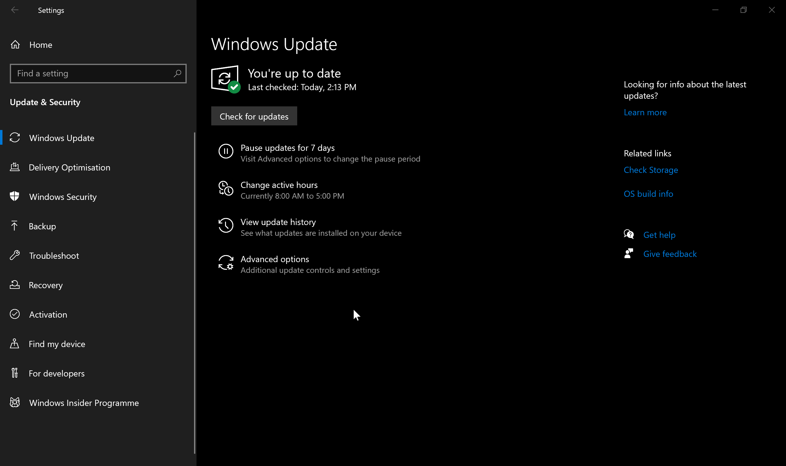

Windows 10
Updating the operating system
Disclaimer
If you update or upgrade your operating system (OS) you do so on your own risk!
In general, there are many good reasons to update your OS. Some of the software tools or their functionality used in our tutorials will only work on more recent OS versions. Updating your OS will also ensure that you have the latest security updates installed and help prevent unauthorized access to your computer.
There a two main reasons that would prevent you from updating your OS:
- Your hardware would not support the updated OS.
- Some of your software you depend on might not work on a newer OS.
Please update to the latest version of Windows 10: version 21H1. (Major Windows versions indicate in which half of the year they were released, i.e. the latest version 21H1 in the first half—May—of 2021.)
-
Check your current Windows version
 : Select the Windows Start button > Settings > System > About > scroll to bottom of page
: Select the Windows Start button > Settings > System > About > scroll to bottom of page -
If you do not have the latest version installed: Select the Windows Start button > Settings > Update & Security > Windows Update
 If Windows Update does not offer the latest version, then manually update by going to Windows 10 Downloads and choosing the latest version.
Accessing a terminal to connect with the server
These instructions will ensure that your local computer can connect to a Linux server and copy files between them using a software tool called OpenSSH.
OpenSSH comes pre-installed if you have Windows 10 version 1803 or newer. If you updated to the latest Windows 10 version, you should already have OpenSSH available to you. If your Windows 10 version is older because you cannot update, follow the official Microsoft documentation on installing OpenSSH Client.
The simplest way to access OpenSSH on Windows is to open the “Command Prompt” application, discoverable through the search bar. This application will provide sufficient functionality for all server-based work you will do in MICB405.
Once here, you can proceed to Tutorial 1.
Additional considerations for Windows
Be aware that when you open Command Prompt, you are using an entirely different local shell with its own set of commands unique from Linux. Only after you are connected to the server (using OpenSSH, see above) will you be using Bash. Tread with caution if executing commands other than ssh or scp from the tutorials while still in Command Prompt (i.e. while not connected to the server).
Optional: Windows Subsystem for Linux
You can create a true Linux environment at the command line by setting up Windows Subsystem for Linux (WSL). You can then access Bash on a virtualized Linux distribution, either directly through that distribution’s Windows app or on Command Prompt to practice and run Linux commands on your machine without connecting to the server.